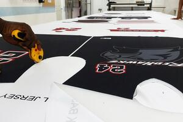

|  |
WE DO SCREEN PRINTINGAt SCOREBOARD Sports, we offer top-notch screen printing services to our customers. Our screen printing service is a perfect choice for those who are looking for high-quality and durable prints on their sports jerseys and other apparel. We utilize the latest screen printing technology and techniques to produce stunning and long-lasting prints that stand out.Our team of experienced designers works closely with customers to create custom designs that reflect their unique style and preferences. We have a wide range of colors and inks to choose from, so customers can get creative with their designs. Our state-of-the-art printing equipment ensures that each print is precise and vibrant, with no smudging or bleeding. |
WE DO EMBROIDERYAt SCOREBOARD Sports, we offer top-quality screen embroidery services to our customers. Screen embroidery is a technique that involves stitching a design onto a garment using a specialized embroidery machine. This technique creates a highly professional and durable finish that is perfect for sports jerseys and other apparel. |
|
WE SELL FOOTBALL CLUB JERSEYOur jerseys are made from premium materials that are designed to last, so you can wear them game after game without worrying about wear and tear. Each jersey features the official colors and logos of your favorite club, so you can show your support in style. |
Current Time:
Contact Us !
Email : afiqfahmi@graduate.utm.my
 Phone Number : 0124721595
Phone Number : 0124721595
Created By :
Afiq Fahmi Bin Roslan
A21EC0153